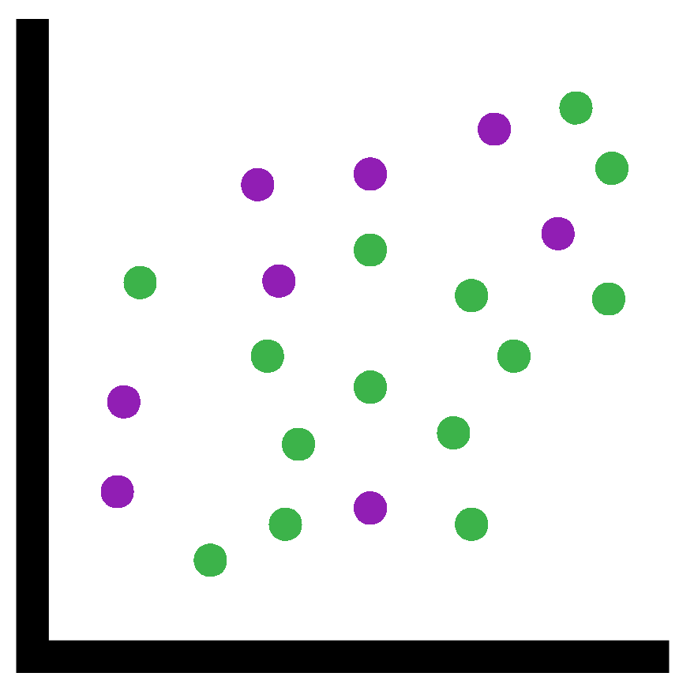
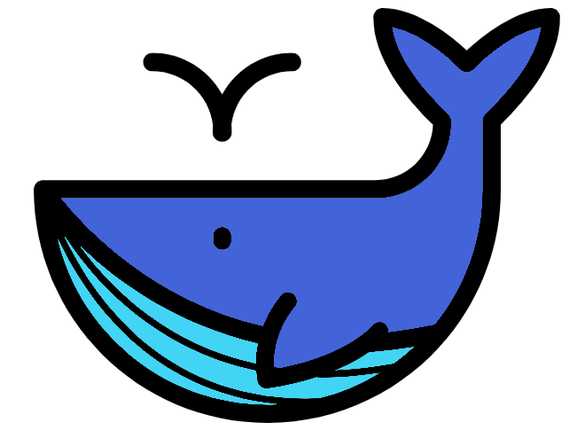
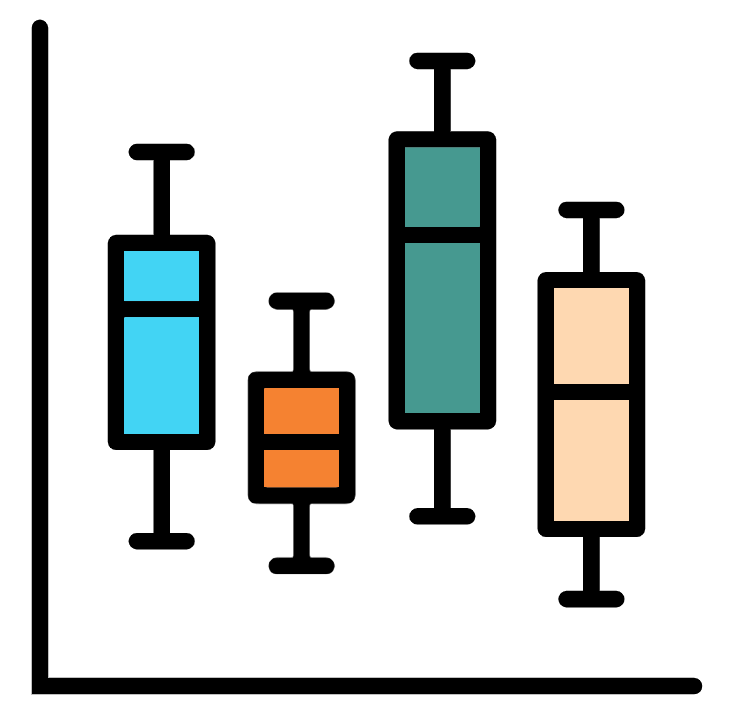

14 Scatter plots and Box plot
Last chapter we learnt how to make Histograms and Line graphs. In this chapter it is Scatter plots and Box plots.
Continue using the directory “Chapter_13-16” as the working directory.
14.1 Scatter plot

Scatter plots are a great way to compare two matching variables. To make a scatter plot we use the plot() function again. This means a lot of what we went through the last chapter will be helpful for this chapter
14.1.1 Basic examples
First we’ll create a simple scatter plot plotting the numbers 1:20 against the same range of numbers times by 2. For this we provide the option type = "p" to indicate we want the data plotted as points.
plot(x = 1:20, y = (1:20)*2, type = "p")That was a nice linear plot. We’ll make a curve this time.
In the command we will not include the option type = "p" as this is the default for plot().
Additionally we will not provide the option names x = and y =. Functions have an order to their options so if you leave out the option names but provide options (in this case vectors) it will use the options in the order. In the case of plot() it will take the first option as x = and the second option as y =. It is common for plotting functions to take x first then y.
plot(1:20, (1:20)*(1:20))14.1.2 Animal sizes

For our scatter plot from real data we will look at the sizes of the largest animals in the world. This data is from: https://en.Wikipedia.org/wiki/Largest_organisms
The data we will be using will contain the following information:
- Animal names
- Average mass in tonnes
- Maximum mass in tonnes
- Average total length in metres
- Group, In this case are they Mammals or Reptiles
- Biom, are they aquatic, semiaquatic, or terrestrial
First download the file into your “Chapter_13-16” directory.
Next, read the data into R. We have included a new option: stringsAsFactors = TRUE. This is important for plotting and will be explained more later.
animal_df <- read.csv("animal_sizes.csv",
row.names = 1, check.names = FALSE,
stringsAsFactors = TRUE
)Check the column names with the function colnames(). With these column names we can create some quick plots.
We’ll compare the average and maximum weight
plot(x = animal_df$`Average mass (tonnes)`,
y = animal_df$`Maximum mass (tonnes)`)Average and maximum weight appear to correlate as expected.
Sometimes a quick and easy plot is all you want. If you’re not going to present a plot then it doesn’t need to be pretty. As long as it is functional it is useful.
Now let’s compare the average weight and length
plot(x = animal_df$`Average mass (tonnes)`,
y = animal_df$`Average total length (m)`)With that we can see the following:
- At lower weights (< 20 tonnes) a longer length does not necessarily mean a higher mass
- At higher weights (>20 tonnes) there appears to be an overall trend of longer lengths equaling higher masses with the animal with the highest mass having the longest length
However it is quite hard to see the overall trend in the lower mass animals as they are squashed in a small part of the plot. We can zoom into this part in two different ways
#First method is to set the x and y limits manually
#This allows us to choose the specific part to zoom into
plot(x = animal_df$`Average mass (tonnes)`,
y = animal_df$`Average total length (m)`,
xlim = c(0,10), ylim = c(0,10))
#The other method is to subset the data
#so we only plot the data we want
plot(x = animal_df[animal_df$`Average mass (tonnes)` < 10,
"Average mass (tonnes)"],
y = animal_df[animal_df$`Average total length (m)` < 10,
"Average total length (m)"])
#I personally prefer the x and y limit approachWe can also include the Biom metadata as an aesthetic in the plot
#Plot
plot(x = animal_df$`Average mass (tonnes)`,
y = animal_df$`Average total length (m)`,
col = as.numeric(animal_df$Biom),
pch = 1
)
#Legend
legend(x = "bottomright", col = 1:nlevels(animal_df$Biom),
legend = levels(animal_df$Biom), pch = 1)14.2 Factors
The last command used a lot of factors.
Factors are a new class! They are a combination of String and Numeric. They are useful for categorical data where the same values will appear multiple times.
View the data frame and then check its structure with str(). You should notice that the columns Group and Biom are Factors with different amounts of levels.
The Group column has 2 levels. Confirm this with the function levels() which returns the levels and nlevels() which returns the number of levels.
levels(animal_df$Group)
nlevels(animal_df$Group)What are levels?
Levels are the unique values in a factor. Levels also store a matching number. This number determines the order of the levels. In the case of Group “Mammal” is assigned the number 1 and “Reptile” is assigned the number 2. This is because numbers are assigned to Levels in alphabetical order by default.
The other part of a factor is the elements. The elements are the part of a vector we are familiar with. Let us look at the factor vector
animal_df$GroupIt looks just like a character vector except there are no double quotes and the levels are at the bottom.
However, the elements are actually numbers! Each number is assigned a string by the level. This means:
- The factor only needs to store a number for each element and then it stores each unique level only once. This will take up less memory than storing a string multiple times.
- A factor can be used as a numeric or a string. This is very useful for plotting.
If you don’t understand factors from that explanation that is fine. I find it is a hard concept to explain or understand.
An analogy would be a map key. You could just write “town”, “Mountain”, “railroad”, “Lake” over a map to say where everything is like below:
Compare this to our map with symbols and a key:

The key represents the levels with our unique strings corresponding to symbols (numbers). Instead of each string being stored on the map multiple times only the symbols (numbers) are.
Time for a more practical example with code. We will first create a character vector then create a factor from it with the function factor(). We’ll then see what we can do with a factor.
#Create a character vector
char_vec <- c("a","b","a","a","b","d","d","c")
#Attempt to convert it to a numeric
as.numeric(char_vec)
#As expected this does not work and will give NAs
#Create a factor vector from our previous character vector
factor_vec <- factor(char_vec)
#Look at the factor
#You will notice that even though d is present in an earlier element
#c is the 3rd level whilst d is the 4th level
#This is because levels are ordered alphabetically
factor_vec
#Convert to string
as.character(factor_vec)
#Convert to numeric
as.numeric(factor_vec)We will get back to plotting soon but first I want to show you how to specify the order of levels. This is important as a lot of the time alphabetically is not wanted. One example is with months.
#Create a factor vector of months
#We'll only include the 1st 3 months for brevity
months_factor_vec <- factor(c("jan","jan","feb","jan","feb",
"feb","mar","jan","feb","mar"))
#Check the vector and you will notice feb is before jan in the levels
months_factor_vec
levels(months_factor_vec)
#Before reordering our factor we will create a vector string
#This will contain our levels in the order we want
#They must contain the same spelling as the existing levels
months_order_vec <- c("jan","feb","mar")
#We use the factor function on our factor
#But we include the option levels providing the ordered character vector
months_factor_vec <-factor(months_factor_vec,
levels = months_order_vec)
#Check the factor now
months_factor_vec
levels(months_factor_vec)Now let us make a nice scatter plot of the animal data with points coloured by Biom and shaped (pch =) by Group.
#Plot
plot(x = animal_df$`Average mass (tonnes)`,
y = animal_df$`Average total length (m)`,
col = as.numeric(animal_df$Biom),
pch = as.numeric(animal_df$Group),
xlab = "Average mass in tonnes",
ylab = "Average total length in metres",
main = "The mass and length of the largest animals"
)
#Legend for biom colours
legend(x = "bottomright", col = 1:nlevels(animal_df$Biom),
legend = levels(animal_df$Biom), pch = 1)
#Legend for group shapes
legend(x = "bottom", col = "black",
legend = levels(animal_df$Group),
pch = 1:nlevels(animal_df$Group))Quite a complicated plot but now we can see:
- Mammals are larger than Reptiles
- Semiaquatic reptiles are larger than Aquatic and Terrestrial reptiles
Why do you think the above 2 points are true? Check out what specific animals are in the data frame animal_df to confirm your thoughts or help to figure it out.
Hopefully that has helped you figure out what a factor is. If not give it a break and let us do some more plots. Hopefully it will click a bit more over time.
If not some more tutorials are: https://swcarpentry.github.io/r-novice-inflammation/12-supp-factors/index.html https://www.tutorialspoint.com/r/r_factors.htm
Working with factors resource: https://departmentfortransport.github.io/R-cookbook/factors.html
14.3 Box plot

Next we are going to make a box plot with some Penguin data from: https://allisonhorst.github.io/palmerpenguins/
This data contains information on individual penguins that were gathered from Palmer Station LTER.
First download the file into your “Chapter_13-16” directory.
As you expect the next step is to read in the file. This time the file is a tsv (tab separated file) with no row names. We will ensure that columns containing strings are converted to factors.
penguin_df <- read.csv("penguin.tsv",
check.names = FALSE,
stringsAsFactors = TRUE,
sep = "\t"
)Each row is a measurement of a penguin. The columns for this data frame are:
- species: Species of Penguin
- island: Island the Penguin was found on
- bill_length_mm: The bill length of the Penguin in millimetres
- bill_depth_mm: The bill depth of the Penguin in millimetres
- flipper_length_mm: The flipper length of the Penguin in millimetres
- body_mass_g: Weight of Penguin in grams
- sex: female or male
- year: Year the measurement was carried out in
With all that information we’ll make a nice boxplot to show the body mass against the species.
The function boxplot() can be used with this. This function is different than the others where the first option is yaxis_column_name~xaxis_column_name. This is followed by the option data = where you provide the data frame.
Below is the command for this:
boxplot(body_mass_g~species, data = penguin_df)What if we want to split the 3 box plots into sex?
We can do that like below:
boxplot(body_mass_g~species*sex, data = penguin_df,
col = c("yellow","green"))I will show you some more examples followed by a final nice plot.
x axis = island, y axis = flipper length
boxplot(flipper_length_mm~island, data = penguin_df)x axis = island, y axis = bill depth
boxplot(bill_depth_mm~island, data = penguin_df)x axis = bill length, y axis = species and sex
boxplot(bill_length_mm~species*sex, data = penguin_df)What happens if we try to plot a factor on the y axis?
boxplot(island~species*sex, data = penguin_df)It does not work as an object with class factor can not be added to the x axis object.
What about a numeric to the x axis?
boxplot(flipper_length_mm~year, data = penguin_df)That works and looks good because it is a discrete set of numbers. In fact you can have a factor where the levels are numerics. If you do this make sure it is a discrete set of numbers.
What if we use a continuous set of numbers?
boxplot(body_mass_g~bill_length_mm , data = penguin_df)This does work! However, a scatter plot would most likely be a lot more suited to plotting this data.
We will now make one final plot for this section. I will not explain what the code is doing. Instead read and run the code to figure it out.
boxplot(body_mass_g~species*year ,
data = penguin_df,
col = c("white","grey","orange"),
main = "Mass of different Penguin species for 2007 - 2009",
xlab = "Species and year",
ylab = "Body mass in grams")14.4 Saving a plot to a file

To save a plot to a file you can use the functions png() and dev.off().
The function png() goes before all the plotting commands. It has various options but the ones we will use are:
filename =: Provide this with a string that will be the filename of the resulting file.units =: The units the width and height will be in. the default is “px” for pixels but I like to go for “mm” for millimetres.width =: The width of the plot in the file.height =: The height of the plot in the file.res =: Resolution of the plot. Usually a number between 50 and 300 with 300 being better quality. This number refers to dpi (dots per inch).
After the png() and plotting functions you use the function dev.off(). This lets R know you are finished plotting and so the file from png() will be created.
You can then look at the plot. If it is not how you would like you can edit the script and rerun from png() to dev.off(). Through trial and error you can make the plot look how you like.
Let us save the last plot as a png file:
png(filename = "penguin_species_and_year_against_mass.png",
units = "mm", width = 50, height = 50, res = 150)
boxplot(body_mass_g~species*year ,
data = penguin_df,
col = c("white","grey","orange"),
main = "Mass of different Penguin species for 2007 - 2009",
xlab = "Species and year",
ylab = "Body mass in grams")
dev.off()Looking at the plot we made the width and height way too small. Therefore let us edit the width and height and then run it again.
Note: You will need to close and open the file after running the command to see the new plot.
png(filename = "penguin_species_and_year_against_mass.png",
units = "mm", width = 250, height = 250, res = 150)
boxplot(body_mass_g~species*year ,
data = penguin_df,
col = c("white","grey","orange"),
main = "Mass of different Penguin species for 2007 - 2009",
xlab = "Species and year",
ylab = "Body mass in grams")
dev.off()That overall is much better. But we cannot see all the labels on the x axis. Therefore let us make it wider.
png(filename = "penguin_species_and_year_against_mass.png",
units = "mm", width = 400, height = 250, res = 150)
boxplot(body_mass_g~species*year ,
data = penguin_df,
col = c("white","grey","orange"),
main = "Mass of different Penguin species for 2007 - 2009",
xlab = "Species and year",
ylab = "Body mass in grams")
dev.off()Super! You can save plots in other file formats and there are more options. Check them out with ?png.
I hope you are ready to make more plots with the Penguin data because it is time for some exercises.